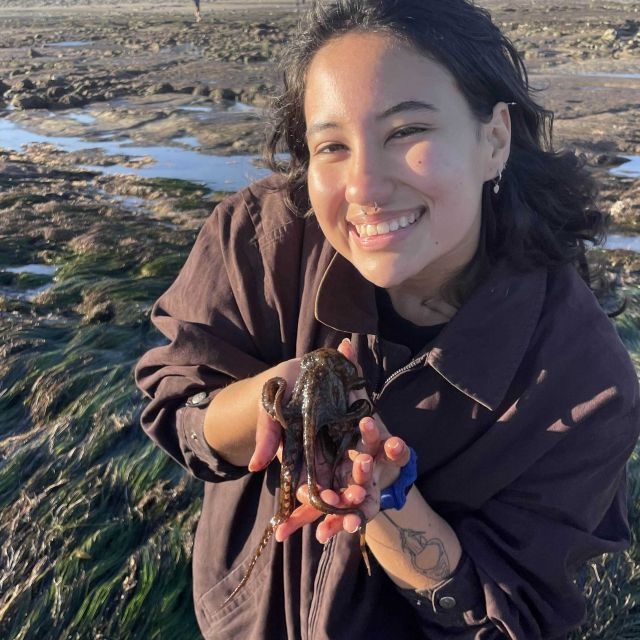
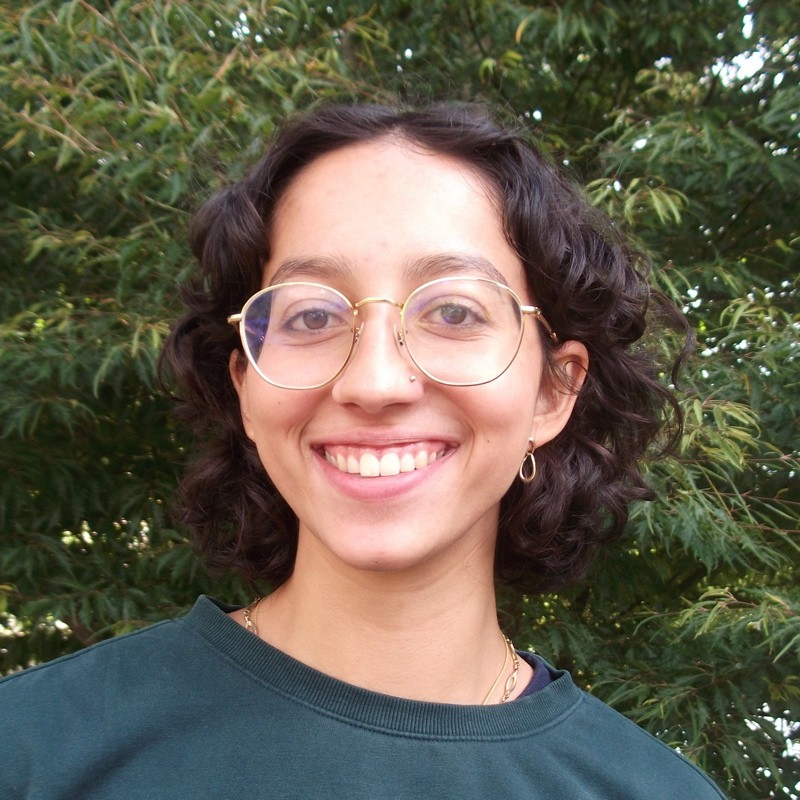

Baetge Lab
Microbial & Bio-Optical Oceanography
ASU Bermuda Institute of Ocean Sciences
Dr. Nick Baetge | Assistant Research Scientist
“Being a scientist and sailor is too good to be true.” — Roger
Revelle
My research explores how marine microorganisms influence the cycling and fate of organic carbon in the ocean. By integrating long-term ocean observations, laboratory experiments, and emerging bio-optical technologies, I investigate how microbial communities respond to environmental change and how their activity shapes ocean biogeochemistry.
At the ASU Bermuda Institute of Ocean Sciences, I work with an interdisciplinary team to investigate organic matter cycling in the Sargasso Sea. My current research focuses on understanding the processes that control dissolved organic matter bioavailability, developing experimental approaches to measure microbial carbon consumption, and expanding our ability to observe biological and biogeochemical variability using underway optical measurements. Together, these approaches help connect microbial processes with broader patterns of ocean ecosystem change.
Beyond research, I am committed to supporting early-career scientists and helping foster a more accessible, equitable, and inclusive ocean science community. This website shares ongoing research, collaborations, and resources for those interested in exploring opportunities in ocean science.
A short reel from a 5-day research cruise off Hawaii. Check out the blogs from this cruise!
Our Team at BIOS
My research at the ASU Bermuda Institute of Ocean Sciences is supported by a close-knit, interdisciplinary group of scientists and research technicians. While we pursue distinct research questions and projects, we share expertise, facilities, and a common interest in understanding marine microbial communities and organic matter cycling in the Sargasso Sea. This collaborative environment provides opportunities to develop independent research directions while contributing to broader scientific efforts, including BIOS-SCOPE.


This website was last updated November 22, 2026.
If you spot
inaccuracies or have suggestions for improvements or resources, please
get in touch!